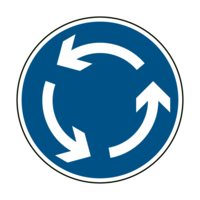
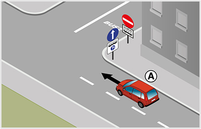

- 113. Hogyan kell közlekedni a jelzőtáblát követően? #703424
- Úgy, hogy az út által körbezárt terület a járművezetőtől balra essék.
- Úgy, hogy az út által körbezárt terület a járművezetőtől jobbra essék.
- Ellentétes rendőri jelzésig körbe-körbe kell haladni.

- 114. Mire utasít ez a jelzőtábla? #703425
- Arra, hogy a jelzőtáblával jelzett akadályt jobbról kell kikerülni.
- Jobbra történő bekanyarodásra.
- Arra, hogy a jelzőtáblával jelzett akadályt valamely irányból ki kell kerülni.

- 115. Gépjárművel közlekedve szabad-e behajtani a jelzőtáblával jelzett területre? #703428
- Igen, a kiegészítő táblán jelzett időszakon kívül, célforgalomban.
- Igen, a kiegészítő táblán jelzett időszakban, célforgalomban.
- Nem.
- 116. Milyen sebességgel közlekedhetnek a járművek a jelzőtáblával jelzett területen? #703429
- Legfeljebb 20 km/h sebességgel, de csak a kiegészítő táblán jelzett időszakon kívül, célforgalomban.
- Legfeljebb 10 km/h sebességgel, de csak a kiegészítő táblán jelzett időszakon kívül, célforgalomban.
- Legfeljebb 5 km/h sebességgel, de csak a kiegészítő táblán jelzett időszakon kívül, célforgalomban.

- 117. Gépjárművel közlekedve szabad-e behajtani a jelzőtáblával jelzett területre? #703430
- Igen, a kiegészítő táblán jelzett időszakon kívül, az ott lakók járműveivel, továbbá engedéllyel.
- Nem.
- Igen, a kiegészítő táblán jelzett időszakban.

- 118. Gépjárművel közlekedve szabad-e behajtani a jelzőtáblával jelzett területre? #703431
- Nem.
- Igen.

- 119. Mikor nem kötelező legalább a táblával megjelölt sebességgel közlekedni? #703465
- Akkor, ha az a személy- és vagyonbiztonságot veszélyeztetné.
- Akkor, ha a vezető alacsonyabb sebességgel kíván közlekedni.
- Mindig kötelező legalább a táblán megjelölt sebességgel közlekedni.

- 120. Mire utasítja ez a jelzőtábla a gépkocsik vezetőit? #703466
- Arra, hogy a jármű legalább egy hajtott tengelyén lévő gumiabroncsokat hólánccal kell felszerelni.
- Arra, hogy a jármű legalább egy hajtott kerekén lévő gumiabroncsot hólánccal kell felszerelni.
- Arra, hogy a jármű minden tengelyén lévő gumiabroncsokat hólánccal kell felszerelni.
- 121. Mi a jelzőtábla neve? #703467
- ’Kikerülési irány’
- ’Kötelező haladási irány’
- ’Szoros jobbra tartási kötelezettség’
- 122. Mi a jelzőtábla neve? #703468
- ’Körforgalom’
- ’Kötelező haladási irány’
- ’Forgószél’

- 123. Szabad-e behajtani gépkocsival a jelzőtáblával jelzett területre? #703469
- Igen, mozgáskorlátozott személy szállításakor.
- Nem.
- Igen, feltétel nélkül.

- 124. Gépkocsival közlekedve szabad-e megfordulni a jelzőtábla utáni útkereszteződésben? #703470
- Nem.
- Igen.
- Csak akkor, ha a jelzőőr erre engedélyt ad.

- 125. Mi a jelzőtábla jelentése? #703606
- ’Kötelező haladási irány’
- ’Egyirányú forgalmú út’
- ’Terelőút’

- 126. Mi a jelzőtábla jelentése? #703607
- ’Kötelező haladási irány’
- ’Kikerülési irány’
- ’Egyirányú forgalmú út’
- 127. Mi a jelzőtábla jelentése? #703609
- ’Kikerülési irány’
- ’Kötelező haladási irány’
- ’Terelőút’

- 128. Szabad-e segédmotoros kerékpárral a jelzőtáblával jelzett területre behajtani? #703610
- Igen, de csak a megjelölt időszakon kívül.
- Igen, a megjelölt időszakban.
- Nem.
- 129. Segédmotoros kerékpárral milyen sebességgel szabad közlekedni a jelzőtáblával jelzett területen? #703611
- Csak a megjelölt időszakon kívül szabad közlekedni, és akkor is csak legfeljebb 20 km/h sebességgel.
- Legfeljebb 40 km/h sebességgel.
- A jelzőtáblával jelzett területre nem szabad segédmotoros kerékpárral behajtani.

- 130. Segédmotoros kerékpárral közlekedve figyelembe kell-e venni a jelzőtábla jelentését? #714908
- Nem.
- Igen.
- Csak akkor, ha nem szállít utast.

- 131. Ön az ’A’ jelű személygépkocsit vezeti a képen látható helyen. Milyen irányban folytathatja az útját? #715296
- Csak egyenesen.
- Akár egyenesen, akár jobbra.
- 132. A képen látható ’A’ jelű személygépkocsi egyenesen kíván továbbhaladni. Az útkereszteződésben kell-e elsőbbségadási kötelezettségre felkészülnie? #715297
- Igen, a jobbról érkező járművek részére.
- Nem, mert ebben az útkereszteződésben nem érkezhetnek jobbról járművek.